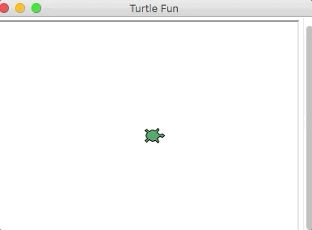

17.5. Local Turtles¶
In the earlier chapters, whenever we used Python turtles, we simply opened up a repl.it or Trinket editor and happily started to code.
Example
Click Run to watch a turtle do a random walk!
Each of the online editors performs some tasks behind the scenes to display the turtle graphics. To do the same thing locally, we need to include a couple of extra steps.
17.5.1. Screen Control¶
In VS Code, create a new file inside the local_practice directory. Call the
file turtle_fun.py.
Copy and paste the following code into turtle_fun. It makes our turtle
object, bob, draw a circle with a radius of 50 pixels.
1 2 3 4 5 6 7 8 9 | import turtle
bob = turtle.Turtle()
bob.shape('turtle')
bob.color('green')
bob.pensize(3)
bob.speed(8)
bob.circle(50)
|
Run the program and notice that a separate window opens to show the drawing.
What happens when bob finishes the circle?
Both repl.it and Trinket control the drawing space automatically. This lets users focus on moving the turtles around. However, when we run turtle programs locally, we need to control the drawing space ourselves.
17.5.1.1. Keeping It Open¶
The first step is to figure out how to keep the drawing space open after the turtle object finishes drawing.
Add the following statement on line 2 of the code:
window = turtle.Screen()
This statement does not open the drawing space. Instead, it creates a
Screen object called window. We can then use the object to control the
space. The Screen class defines methods to set things like background
color, size, and how and when to close the drawing space.
At the bottom of the code, add this statement:
window.exitonclick()
The method exitonclick() tells Python to wait for the user to click inside
the window. Once this happens, the program closes the drawing space.
Run the turtle program again with the two new statements. Properly done, the drawing space remains open until we click inside of it.
17.5.1.2. Other Screen Methods¶
Once we define a Screen object, we can use it to control several properties
of the drawing space. For example, we can add a title to our drawing space with
the statement window.title("Turtle Circle"). TRY IT!
Two other Screen methods are outlined in the Python Turtles
appendix:
Setting the window size.
Setting a background color.
In addition, the Python website
provides a complete list and explanation of Screen methods.
17.5.2. Try It!¶
Replace the code in turtle_fun.py with the following:
1 2 3 4 5 6 7 8 9 10 11 12 13 14 15 16 17 18 19 20 21 22 | import turtle
# Create a Turtle object & assign properties:
bob = turtle.Turtle()
bob.shape('turtle')
bob.color('black')
bob.fillcolor('#419f6a')
bob.pensize(3)
bob.speed(10)
# Draw a filled circle:
bob.begin_fill()
bob.circle(100)
bob.end_fill()
# Draw and fill some half-circles:
bob.fillcolor('#3c79b8')
bob.begin_fill()
bob.circle(50,180)
bob.circle(-50,180)
bob.circle(-100, 180)
bob.end_fill()
|
Run the code as-is to see how the program behaves.
Create a
Screenobject and use it to keep the drawing space open until you click in the window.Add a title to the drawing window.
Change the width of the drawing space. For your device, how wide can you make the screen?
Change the height of the drawing space. For your device, how tall can you make the screen?
Resize of the window to be 400 pixels wide and 500 pixels tall.
Change the background color of the window.
Change the movement commands to make
bobdraw something else. Canbobrun off the edge of the screen?Bonus: Explore how to use the xcor() and ycor() methods. Add a conditional to turn
bobaround when the object gets too close to one edge of the screen. Can you make the turtle bounce back and forth several times between the edges of the screen?
|
|
|---|---|

|
{kind=link}